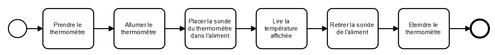
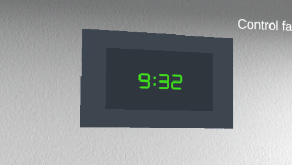

- Stage assistant ingénieur en Réalité Virtuelle
- Mise en place d'une formation en réalité virtuelle pour des protocoles de traçabilité et d'hygiènes
- Date : février à juin 2022 (20 semaines)
- Entreprise : e-ManRisk filiale du groupe E.Leclerc
- Mots clés : Réalité Virtuelle, Formation, Oculus
- Outils principaux : Unity, C#, Modelio, Postman, GitHub, VSCode
L’objectif de ce stage était la mise en place d‘un environnement de réalité virtuelle et/ou de réalité augmentée permettant la mise en œuvre des protocoles de traçabilité et d’hygiène.
J'ai ainsi travaillé autour de 3 parties :
- La modélisation d’un environnement de réalité virtuelle sur Unity, notamment sur la partie animation des objets mais aussi l'interaction entre les objets et le participant.
- L’élaboration et la mise en place d’un scénario pour cette formation axé sur la procédure de cuisson, refroidissement rapide et stockage d’un aliment à l’aide de Mascaret, un système développé par le CERV.
- L’intégration du logiciel développé par la société e-ManRisk au sein de l'environnement 3D et la possibilité d'interagir avec celui-ci à l’aide de la librairie node : Puppeteer.
Pour ce projet, j'ai utilisé un oculus quest.
Phase de conception préliminaire
Une première partie du projet a été d'étudier les attentes et de discuter avec l'équipe métier de la société.
Le protocole de traçabilité et d’hygiène qui serait mis en place pour cette formation avait été choisi au préalable.
C'est une procédure de cuisson, refroidissement rapide et stockage d’un aliment qui est faite dans les laboratoire des magasins.
Il fallait donc décider avec l'équipe métier quel type de formation allait-on faire car cela influe sur l'aide apportée à l'apprenant et sur sa liberté à agir dans l'environnement 3D.
Le choix final a été de réaliser une formation initiale : les objets à utiliser seront mis en évidence et la procédure sera découpé en de nombreuses actions simples afin que l'apprenant puisse assimiler de manière plus efficace les procédures auxquelles on souhaite le former.

Explication d’une prise de température dans une formation initiale
Par la suite, j'ai étudié différentes solutions pour l'implémentation de la formation dans la Réalité Virtuelle.
Ayant l'opportunité pour ce projet de travailler en collaboration avec le CERV (Centre Européen de Réalité Virtuelle) à Brest, j'ai pu utilisé le système qu'ils développent : Mascaret.
C'est un système permettant de mettre en lien des diagrammes UML (notamment des diagrammes de classe et d’activité) et un environnement de réalité virtuelle modélisé sur un moteur de jeux 3D comme Unity, afin de réaliser des formations.
 Exemple d’une séquence d'action pour Mascaret
Exemple d’une séquence d'action pour Mascaret
La procédure que l’apprenant est amené à réaliser au cours de cette formation peut être assez longue, il y a le temps de la cuisson mais aussi le temps du refroidissement qui peut durer jusqu’à deux heures.
Dans le cadre réel, un opérateur serait amené à réaliser d’autres procédures ou à la réaliser avec d’autres aliment pendant que l'aliment cuit ou refroidit, dans le cas d’une formation cela ne sert à rien de surcharger l’apprenant avec d’autres aliments ou plusieurs procédures, il fallait donc trouver un moyen de faire s'écouler le temps au sein de l'environnement virtuel sans que la cuisson ou le refroidissement ne paraissent immédiat.
Deux solutions pour spatialiser l’environnement dans le temps ont donc été mises en place : l’utilisation d’horloge et l'utilisation d’écran noir.
Une horloge a été mise dans l'environnement afin d'indiquer l’heure à l’apprenant.
Tout au long de la formation, le temps passe à un rythme normal et est affiché sur celle-ci.
Une deuxième horloge est placée au-dessus du lave-main pour indiquer le temps que l’apprenant prend à se laver les mains et faire respecter le fait que cette étape doit durer plus de 30 secondes.
-

Horloge du laboratoire
-
Horloge du lave-main
Les écrans noirs
L’utilisation d’écran noir pour faire passer le temps est un procédé très utilisé que ce soit dans les jeux ou les dessins animées. J’ai décidé d’en utiliser lorsqu'une action dure pendant un durée trop longue, par exemple lorsque l’apprenant met le poulet dans le four et que celui doit cuire, un écran noir avec le temps qui passe s’affiche pendant quelques secondes.
Ce temps passe aussi sur l’horloge principale pour que cela reste cohérent.
La gestion de la contamination alimentaire
Cette formation s'intéressant principalement à l’hygiène alimentaire et cette procédure ayant pour but de savoir si un aliment a été potentiellement contaminé par des bactéries, il est important que la contamination alimentaire soit au cœur de notre réalité virtuelle, on va donc la rendre visible pour que l’apprenant la perçoive mieux et le confronter au cas où l’aliment est contaminé ou non.
Visualisation des bactéries
Afin que l'apprenant comprenne mieux les dangers des bactéries, on va appliquer un aspect différent à l’aliment quand il est contaminé ainsi qu’aux mains lorsqu’elles sont sales.
Cette visualisation permet de rendre plus explicite la contamination alimentaire et est plus ludique et marquante que de simplement dire que les mains sont sales ou que l’aliment est contaminé.
L’impact des bactéries dans la formation
En réalité, les opérateurs ne savent pas si un aliment est contaminé ou non avant d'arriver à la fin de la procédure de refroidissement rapide, c’est pourquoi le choix a été fait de faire pareil dans cette formation : une valeur aléatoire est attribuée à l’aliment au lancement de la simulation afin de fixer s’il est contaminé ou non.
L’apprenant réalise des mesures de température de l'aliment lorsque la procédure de refroidissement est finie qui détermineront si l'aliment doit être stocké ou non.
Toutefois la contamination alimentaire passe aussi par un mauvais respect des procédures, l’apprenant commence sa formation avec les mains sales comme cela serait le cas dans la vraie vie, ainsi s’il touche un aliment avant de s’être correctement lavé les mains ou si un aliment touche le sol celui ci va devenir contaminé, quelques secondes plus tard un écran disant au participant que l'aliment est contaminé et qu’il doit recommencer sera affiché.
Mise en place du logiciel d’e-ManRisk dans l’environnement virtuel
Le logiciel développé par e-ManRisk permet d’enregistrer le résultat des contrôles de qualité réalisés dans les laboratoires.
Le logiciel est utilisé sur des tablettes car c’est ce qui est le plus pratique dans ce cadre.
Un élément important de ce projet était donc de pouvoir faire de même dans la réalité virtuelle : avoir une tablette qui permettrait de prendre en main le logiciel et d’enregistrer le contrôle réalisé durant la formation.
Unity ne propose pas de navigateur web intégrable au sein de l’environnement 3D, il n’y a pas d’outil gratuit permettant ceci et crée ce type d’outil aurait été un travail trop volumineux, il fallait trouver une autre solution pour avoir accès à l’application d’e-ManRisk.
La solution sera d’utiliser la librairie Puppeteer.
La librairie Puppeteer
La librairie Puppeteer permet d'interagir avec un navigateur web Chrome, via un serveur Node, comme on le ferait sur un ordinateur de manière classique mais de manière automatisée.
On peut ainsi simuler des clics de la souris ou des appuis sur les touches du clavier mais également extraire des pdf ou faire des captures d’écran de page.
C’est ainsi que l’on naviguera sur l’application web d’e-ManRisk : une capture d’écran de la page actuelle sera prise et affichée sur la table dans l'environnement virtuel, l’utilisateur devra être en mesure de cliquer sur le site et la page affichée devrait changer ou des éléments devraient apparaître.
On souhaite également que les champs textuels puissent être remplis, il faudra donc pouvoir modéliser un clavier pour la tablette.
La tablette dans l'environnement 3D
Dans un souci de précision pour interagir avec la tablette, il y aura en fait deux tablettes dans le monde virtuel : une première sera disposée dans le laboratoire à taille réelle que l'utilisateur devra saisir pour être transféré devant une plus grande tablette avec laquelle il pourra interagir par un pointeur et sur laquelle sera affiché si besoin un clavier.
Outils et langages utilisés